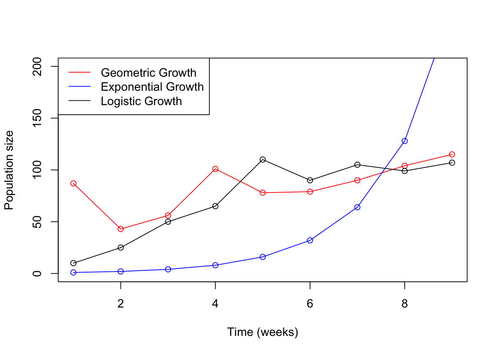
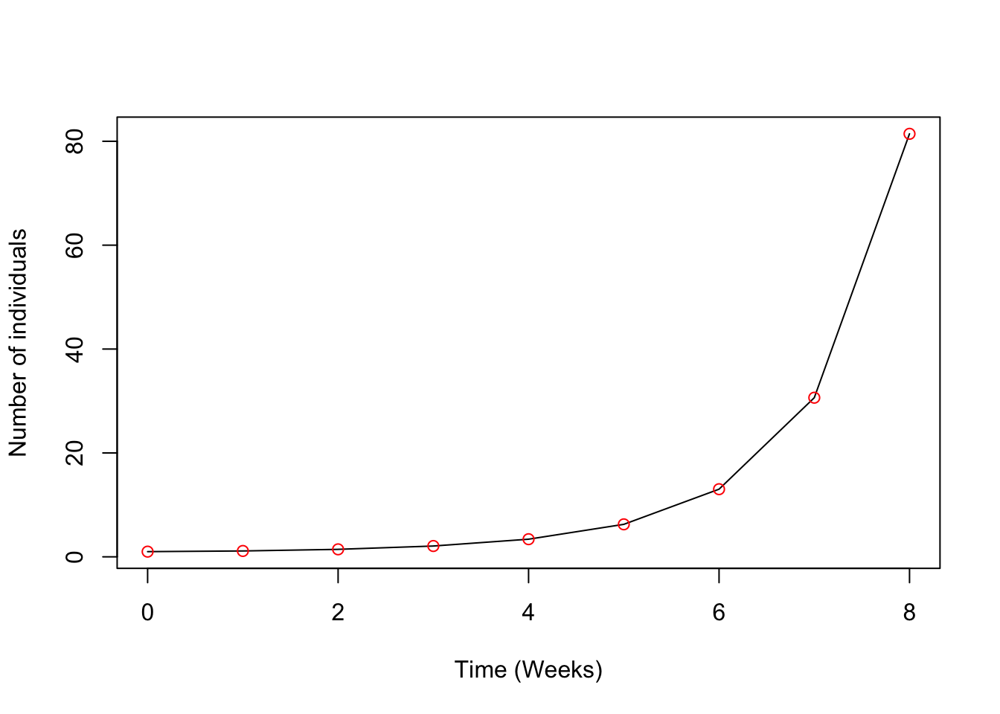
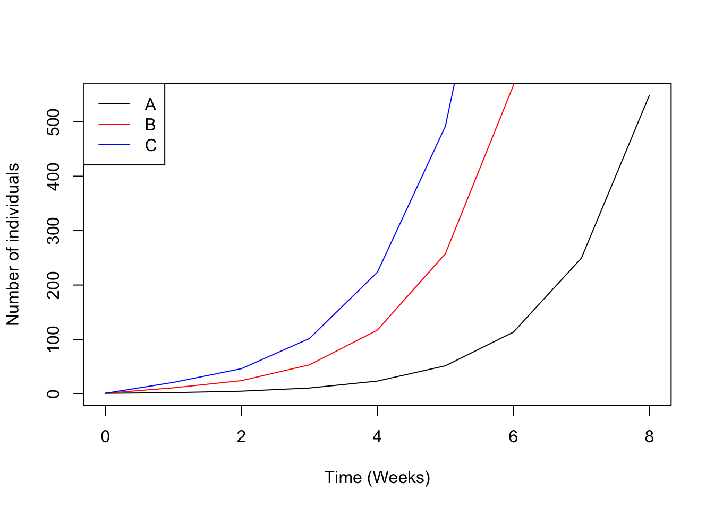
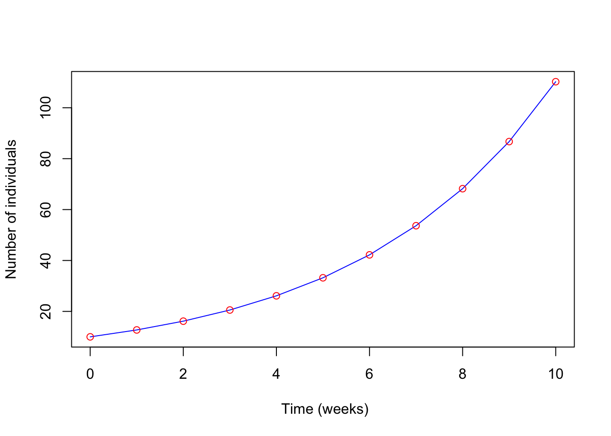
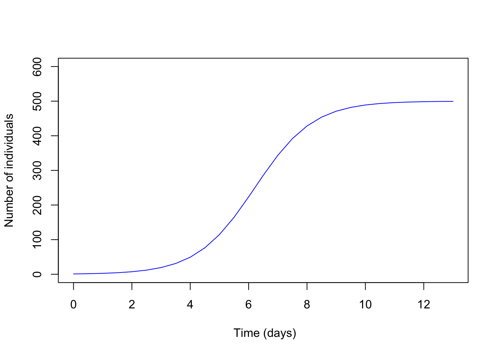
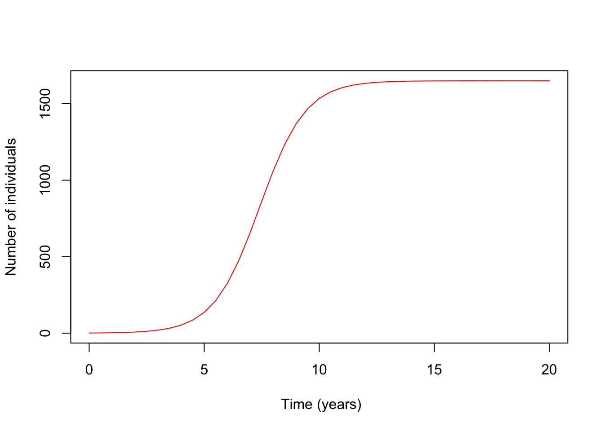
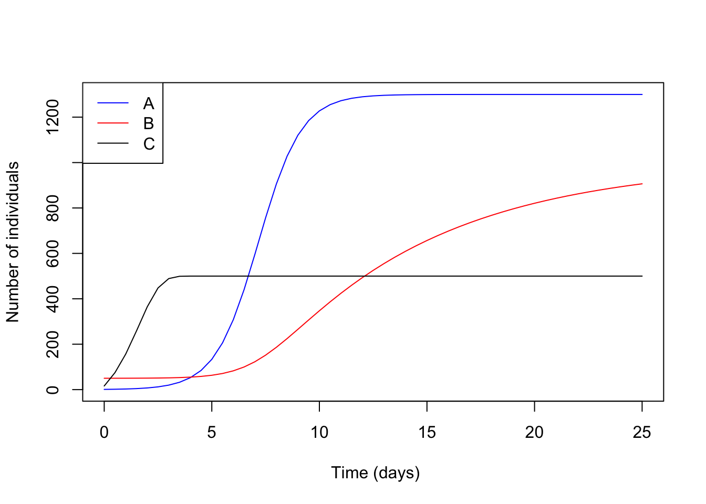
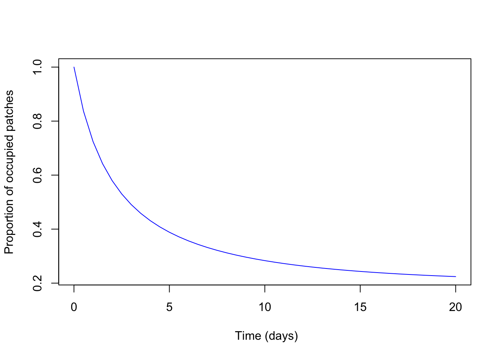

Chapter 2 Exponential vs Logistic Growth
The size of all populations change in four fundamental ways. A population will increase in size through immigration or the birth (asexual or sexual) of new individuals; Populations decrease in size through emigration or death of individuals. The rates that individuals enter and leave a population can be affected by many different environmental factors. Biologists can model how populations change over time by using rates of change.
As a result, several different methods have been created to model the growth of populations over time. However, not all methods of modeling population size are appropriate for all situations.
When resources such as habitat and food are abundant, a population can experience growth at either geometric or exponential rates. When resources are limited, the population growth rate slows and eventually stops as it approaches the species’ carrying capacity (K).
This lab aims to
highlight several different methods to model population dynamics,
the difference between exponential and logistic growth,
understand how r and K influence population dynamics and
be an introduction to meta-populations.
This lab has 50 questions and is out of 67.
How to hand-in the lab
Throughout the handout example code will be provided. Use the provide R code to create your own RStudio script where you will do your work. Make sure to comment your code throughout. Develop your script to answer all of the questions and show your work. You must submit your own R code and any plots generated along with all your answers to this lab.
How to read the sections of code
When reading sections of R code, there are several important things to know. Lines that contain a number sign/hashtag # in front of them are comments. R and R studios knows not to read these lines within your script. Therefore it is crucial not to write commands or variable values you want to run within comments.
Comments are useful since they allow you to comment or explain what the code is doing within your R script.
Population Growth Definitions
Geometric population growth: population growth in which generations do not overlap and in which successive generations differ in size by a constant ratio.
Exponential population growth: population that produces a J-shaped pattern of population increase.
Logistic population growth: A pattern of growth that produces a sigmoidal, or S-shaped, population growth curve; population size levels off at carrying capacity (K).
Here are some data frames that were created manually to demonstrate each growth type The data fame functions below produces two columns, “time” and “x”. The seq(1,9,1) produces a vector of numbers from 1 to 9 in steps of 1. The c() lets R know that there are several entrees.
# Data frame demonstrating gemometric population growth
geometric.df <- data.frame("time"=seq(1,9,1),
"x"=c(87,43,56,101,78,79,90,104,115))
# Data frame demonstrating exponential population growth
exponential.df <- data.frame("time"= seq(1,9,1),
"x"= c(1,2,4,8,16,32,64,128,256))
# Data frame demonstrating logistic growth
logistic.df <- data.frame("time"= seq(1,9,1),
"x"= c(10,25,50,65,110,90,105,99,107))
# If you wanted to change the name of the "time" column to "weeks" in the data frame
# how would you do that?
# This function plots the Geometric Growth (red) line below
plot(x=geometric.df$time, y=geometric.df$x, type="o", col="red",
ylim = c(0,200),
xlab="Time (weeks)",
ylab="Population size")
# What do you think you would change only to have the y-axis show c(0,150)? What would
# you add to set the x-axis from 0-15?
# Adding lines for the other Exponential and Logistic Growth
lines(x = exponential.df$time, y = exponential.df$x, col="blue", type="o")
# This adds data points from the Exponential Growth df in the col or colour blue with
# a specific line type.
lines(x = logistic.df$time, y = logistic.df$x, col="black", type="o")
# This is the data for the Logistic Growth as the black line
# The legend function adds a legend to your plot. You can change the location and what
# is display in the legend
legend("topleft", legend = c("Geometric Growth", "Exponential Growth", "Logistic Growth"),
lty = 1, col=c("red", "blue", "black"))
2.1 Lab 5
Packages need for this lab
There are several R packages that are need for this lab. Copy the following code, paste and run within your own R script. You can also download the following packages by within the Packages tab within the Files/Plot/Package/Help/Viewer pane within RStudio.
Answer questions 1-4 below based on three possible methods to model a population of barnacles above
- A species of barnacles live in a small bay with unlimited food supplies and a limited rock surface area to grow on. Would you use an exponential or logistic growth rate to model the abundance of barnacles in Back Bay? (1)
- If the barnacles had unlimited habitat and food, would your answer change? (1)
- Looking at the Geometric Growth line (red), how would you describe the shape of the curve? Does it: (1)
ii) The population size increases faster as the population becomes larger.
- Looking at the Exponential Growth line (blue), how would you describe the shape of the curve? Does it: (1)
ii) The population size increases faster as the population becomes larger.
2.1.1 Section 1: Geometric vs.Expontential Graphs
2.1.1.1 Geometric Growth
Recall from class that the formula for a geometric growth model is
and that an estimate for the finite rate of increase between two years can be calculated by
Knowing this, answer questions 5-8 using the graph below. Below is a template for R code to produce a Geometric Growth Curve. This is an template example, and the parameter values have been changed.
dt = 1 # dt is the time step or jumps that the model will increase time in.
time = seq(0, 8, dt) # This produces a vector from 0 to 8 that increase in
# steps/jumps of dt.
# Check it out by typing time in the Console
# Growth rate
r <- 8 # r is the geometric growth rate parameter for the model. Changing this
# value will change the rate at which the population changes. Larger values will
# grow quick and values under 1 will decrease in size.
# Population
j <- NULL # j will act as a place holder for the model's prediction of the
# population abundance.
j[1] = 100 # This line informs R that the first value of j or j[1] is 100.
# To change the starting value of j set another value, etc. j[1]=10
# If the initial population was 25, how would you indicate this to R?
# Building a loop
for(t in seq(1, length(time)-1,1)){
# Geometric Growth Equation
j[t + 1] <- (r^t)*j[t]*dt
}
# The loop above tells R to calculate j - population size - based on the
# equation provided for time steps 1 to the length of the vector (i.e., 8)
# in steps of 1.
plot(time, j, xlab="Time (Weeks)", ylab ="Number of individuals", type="l") #Plots the data as a line plot
points(time, j, col="red") # adds the red dots to the line 
Question 5: Looking at the plot above, eyeball what is the population’s size at week 6? (1)
Question 6: Eyeball what is the population size at year 7? (1)
Question 7: Estimate the growth rate of the population between week 6 and 7. Recall, \(\lambda\) = N 7/ N6. (1)
Question 8: Take your estimated finite growth rate and estimate the population at week 9 knowing that the initial population size is 1. (1)
Question 9: What is the population size at week 9 if the population had a finite growth rate of 1.8 with the same initial population size of 1? (1)
Question 10: Estimate the population size at week 10 for a population that started with 10 individuals and a finite growth rate of 1.5. (1)
Question 11: What would happen if the \(\lambda\) was set at 1? What would be the population size at week 20 that started with 12 individuals? (Hint: It could be useful to test your theory in R Studio.) (1)
Question 12: What is the population size at week 3 for a group of white pine trees with a starting population of 53 and a \(\lambda\) of 0.4? (1)
Question 13: Which of the three populations (coloured lines) below have the lowest growth rate (\(\lambda\))? (1)

Question 14: Which of the following populations might be expected to grow geometrically? (Hint: You can assume that interactions with other species can be ignored.) (1)
Question 15: Threatened monarch butterflies are monitored by measuring the area occupied by overwintering butterflies in Mexico. According to the data collected by The World Wildlife Fund Mexico, monarch butterflies occupied 1.9 hectares one recent winter and 2.7 the following winter (one year later). If the population is growing geometrically and grows at the same rate, how much area should the overwintering butterflies occupy one year after that? (3)
Question 16: Ecologist working with Newfoundland wildlife division have been surveying the population abundance of a woodland caribou population 2 years in a row, only counting the number of females. (Note: Often in wildlife management, only females are tracked.) She measured 196 last year and 232 this year. If the caribou population grows geometrically and continues to grow this rate, what will be the size of the population of female caribou 7 years from now (year 9)? (Hint: do two separate calculations to answer the question.) (3)
2.1.1.2 Exponential Growth
Recall from class that population size at Nt can be modeled using an exponential growth by
Nt=N0etr
and that the per capita growth rate can be calculated by
r = ln(\(\lambda\))
Use the graph below for red-winged blackbirds to answer the following questions (17-22). Here is an example code for a population with Exponential Growth. This is an example template, and some parameter values have been changed.
library(deSolve) # The deSolve package is needed to solve the predicted abundance
# Variables that will be used
N = NULL # Number of individuals
y = NULL
res = NULL
# Function that will be predicting the abundance
exponential.growth <-function(t,y,parameters){
N <- y[1]
with(as.list(parameters),{
dN <- r*N
res<-c(dN)
list(res)
})
}
#
# Parameters
r = 0.24 # Here r is the capita growth rate, with larger values growing faster.
# Values below 0 grow slower.
# Initial condition
N0=10 # N0 is the starting population size. Setting it to 10 lets R know what
# the starting population is.
# How would you let tell R the initial population is 55
# Time
times <- seq(0,10,1) # What does this vector look like? How long is it? What are
# the time steps?
# The parameter vector holds all parameter values within the model.
parameters<-c(r=r)
nsol <- as.data.frame(lsoda(y = c(N=N0), times, exponential.growth, parameters))
# The R code for an exponential growth model is a little more complex compared to
# Geometric Growth, but here is what it's doing!
# R has many built in functions that do complex analyses. In this case, we are using
# the function Isoda to numerically solve a differential equation (yes! calculus).
# The equation is the model for exponential growth.
plot(nsol$time,nsol$N,bty = "l", lwd = 1, xlab = " Time (weeks)",
ylab = "Number of individuals", col="blue")
Question 17: Eyeball what the population size at week 6? Eyeball what the population size at week 7? (2)
Question 18: What is the finite rate of increase, \(\lambda\) for this time period (between week 6 and 7)? (1)
Question 19: Knowing this, calculate the per capita growth rate, r. Recall that r=ln\(\lambda\). (1)
Question 20: Using the per capita growth rate, r, and the exponential growth equation to predict the population size at week 14 knowing that the initial population size is 10. Recall that the exponential growth model is (1)
Nt=N0 etr
Question 21: Use the code above and calculate the population size at week 11 when the initial population size is 4 and the capita growth rate is 1.013? (Hint: You will need to change the time sequence and the capita growth rate). (2)
Question 22: When was the red-winged blackbird population growing slowest? (1)
Question 23: Which of the following populations might be expected to grow exponentially? (Hint: You can assume that interactions with other species can be ignored.) (1)
Question 24: In 2015, the global human population was estimated to be 7.3 billion. The global human population growth rate, \(\lambda\), is 1.011 per year. What is the per capita growth rate, r, for the population? (1)
Question 25: If a population of water hyacinths had an r value of 0, what would happen to the population over time? If a population of water hyacinths had an r value of 1, what would happen to the population over time? (Hint: Use the provided code and calculate using RStudio) (2)
Question 26: Using the code above, copy and paste into your own R script. Several values will need to be changed in order to produce the right plot (Hint: Think of what parameter values are different). Produce three different plots, 1) where the r value is less then 0, 2) r is equal to 0 and 3) when r is greater then 0. (3)
Question 27: Species rarely grow exponentially, but occasionally do. Under which of the following conditions is this likely to happen? (1)
2.1.2 Section 2: Logistic Growth
Recall that the definition of a logistic growth curve is a pattern of growth that produces a sigmoidal, or S-shaped, population growth curve; population size levels off at carrying capacity (K). The population grows quickly the farther the population is from it’s carrying capacity, K. As it approaches K, the population’s growth rate begins to slow. Example a population of mountain goats in an area that can only sustain a maximum of 100 individuals.
This is an example code for Logistic Growth curve. This is an example of code and parameter values have been changed.
library(deSolve)
# The deSolve package is important for the code to run. Enure that is loaded.
# Species variables
G = NULL # Number of Goats (#/time)
y = NULL # Vector that holds the number of populations/
# groups. More important with several species.
res = NULL # Vector that holds model parameters
#function
logistic.model<-function(t, y, parameters){
G <- y[1] # Population place in vector
with(as.list(parameters),{
dG <- r*G*(1-G/k) # Logistic growth equation
res<-c(dG)
list(res)
})
}
# Parameters
r = 70 # Growth rate of the population. Changing this will change the rate
# the population grows
k = 100 # The carrying capacity of the population
# Initial condition
G0 = 80 # Initial population size
# Time
times <- seq(0,20,0.5) # Length of time that the model will run, 0 to 20, with steps
# of 0.5
parameters<-c(r=r, k=k)
nsol <- as.data.frame(lsoda(y = c(G=G0), times, logistic.model, parameters))
plot(nsol$time, nsol$G, type = "l", lwd = 1, xlab = " Time (days)",
ylab = "Number of individuals", col="blue")
Question 28: By eyeballing the graph above, what is the approximate carrying capacity, K, of the population of mountain goats. (1)
Question 29: Is the population growth rate the same throughout the entire plot? How does it change? (2)
Question 30: What part of the graph has the highest growth rate? (1)
Question 31: Why do you think there is a change in the growth rate? Explain. (1)
Question 32: If the population of mountain goats had a r value of 0, a carrying capacity of 1400, and an initial population of 250 what would happen to the population overtime? (Hint use the provide R code above to plot.) (2)
Answer the following question below using the provided R code above. Include any plots generated.
Question 33: Produce two graphs where the carrying capacity is greater and less than initial population of 1300. Attach the generated plots to your assignment. What happens in each plot and what is one possible reason why? (2)
Question 34: Generate a plot where the initial population is greater than the carrying capacity. What happens to the population over time? (2)
Question 35: How does changing the initial population change how long it takes the population to reach it’s carrying capacity? (Hint produce two plots where the initial population is close to the carrying capacity and one where it is further away.) (1)
Question 36 How does changing the growth rate change how long it takes the population to reach it’s carrying capacity? Produce two plots with very different growth rates (1) where the population is increasing and 2) one where the population is decreasing). Set the initial population size to 350 and the carrying capacity to 475. (Hint: take the provided R code above and change the growth rate.) (2)
Question 37: For each of the three pairs of abundance, calculate the finite growth rate and the per capita growth rate. (1)
2.1.3 Section 3: Growth rate and carrying capacity effect on the population
In this section, will we plot the population of hares over a 20 year period. Below is example code and paramter values have been changed.
# Packages that is important for the code to run
library(deSolve)
# Species variables
H = NULL # Number of hares (#/time)
y = NULL # Vector that holds the number of populations/groups. More
# important with several species.
res = NULL # Vector that holds model parameters
#function
logistic.model <- function(t, y, parameters){
H <- y[1] # Initial population size
with(as.list(parameters),{
dH <- r*H*(1-H/k) # Logistic growth equation
res<-c(dH)
list(res)
})
}
# Parameters
r = 100 # Growth rate of the population. Changing this will change the rate the
# population grows
k = 10 # The carrying capacity of the population
# Initial condition
H0 = 1 # Initial population size
# Time
times <- seq(0,20,0.5) # Length of time that the model will run, 0 to 20, with steps of 0.5
parameters<-c(r=r, k=k)
# When you have multiple parameter, list them all within the parameter vector.
nsol <- as.data.frame(lsoda(y = c(H = H0), times, logistic.model, parameters))
# Plot
plot(nsol$time, nsol$H, type = "l", lwd = 1, xlab = " Time (years)",
ylab = "Number of individuals", col="red")
Question 38: Looking at the graph eyeball when the population reaches it’s carrying capacity. What are two different methods to make the population reach it’s carrying capacity sooner? Can not change the same thing twice. (1)
Question 39: When the population size N equals the carrying capacity, K, what will dN/dt equal? (1)
Question 40: In the mountain goat example, the population grows exponentially for a while before it reaches a point at which the goats in the habitat are using most of the available plant food, leaving barely little extra food for newly-born goats to survive. As the population approaches this point, the birth rate ratio to the death rate decreases (that is, there are relatively fewer births compared to deaths). The entire mountain habitat contains a finite number of plants. In the same way that a single hill establishes a carrying capacity for goats, so does the full mountain range, only a much larger value of K. Give one example of something/events that would decrease the population that would be density-dependent (i.e., depend on goat population size) and one that would be density-independent (i.e., not depend on goat population size). (2)
Answer the following questions below using the following graph.

Use the following graph to answer the questions below.
Question 41: Eyeball the K for each of the lines above and order from highest to lowest.Example A=10, B=5, C=1. (1)
Question 42: Which of the lines above had the largest growth rate? (1)
Question 43: Looking at line C, black line, do you think that it would stay at it’s carrying capacity unchanged in the wild? Explain. (1)
Question 44: Model two population of ducks where species A starts with a population of 50, and species B begins with a population 150. If both populations had a per capita growth rate of 1.6 and a carrying capacity, K of 100, would they reach it at the same time? Produce a plot that contains both species. (Hint all the R code needed is provided within the provided code above, but may be within more than one chunk of code.) (3)
2.1.4 Section 4: Dispersal and Meta-population
A metapopulation consists of a group of spatially separated populations of the same species which interact at some level. Below is example code for a metapopulation model.
# Packages that is important for the code to run
library(deSolve)
# Species variables
p = NULL #Proportion or fraction of patches occupied by goats (patches are
# either occupied or not)
y = NULL # Fraction of occupied patches.
# More important with several species.
res = NULL # Vector that holds model parameters
#function
meta.population<-function(t,y,parameters){
p <- y[1] # Informs R the place N has within the vector
with(as.list(parameters),{
dP <- m*p*(1-p)-e*p # Metapopulation model
res<-c(dP)
list(res)
})
}
# Parameters
m = 0.5 # Migration rate amount patches (1/time)
e = 0.4 # Extinction rate of patches
# Initial condition
P0 = 1 # Initial population size
# Time
times <- seq(0, 20, 0.5) # Length of time that the model will run, 0 to 20, with steps of 0.5
parameters<-c(m=m, e=e)
nsol <- as.data.frame(lsoda(y = c(P=P0), times, meta.population, parameters))
# Plot
plot(x = nsol$time, y = nsol$P, type = "l", lwd = 1, xlab = " Time (days)",
ylab = "Proportion of occupied patches", col="blue")
Question 45: If 7 out of the 10 patches had mice within them, what is the patch occupancy P? (1)
Question 46: What is the qualitative difference between the lower and higher patch extinction rates? (1)
Question 47: When is equilibrium patch occupancy highest? (1)
Question 48: Deep-sea vents are openings in the seafloor where hot water and nutrients spew out. They have a rich community of species. However, individuals vents often become plugged up, while new vents can appear in far-flung parts of the ocean. You would expect to find that specie who specialize at living around these vents are good at: (1)
Question 49: Change the m, migration, to 0.5 and e, extinction, to 0.4 and rerun the model. What is the patch occupancy, p, for the meta-population? (2)
Question 50: Roads often decrease dispersal rates for animals and can divide patches in two. How might these consequences of building roads affect the survival of a meta-population? (1)